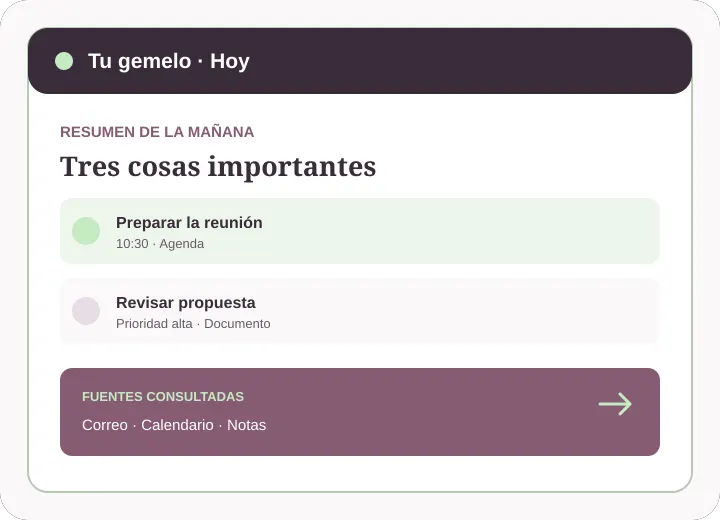

Menta
#C5EBC3 · acentos
GEMELO IA · GUÍA VISUAL
Una interfaz personal y serena. El ciruela aporta legibilidad; los verdes sugieren calma y control; la malva conecta ambas sensaciones. Las ilustraciones hacen visible la trazabilidad del producto.
#C5EBC3 · acentos
#B7C8B5 · bordes
#A790A5 · apoyo
#875C74 · acciones
#392D39 · texto
#FAF8F9 · fondo
Inter para párrafos, navegación y controles. La pareja conserva la guía de estilo del proyecto inicial.

Agenda y fuentes verificables.

Trazabilidad del resumen.
Motivo visual para el contacto.
Ilustraciones vectoriales creadas para esta práctica. Ver créditos de imágenes.